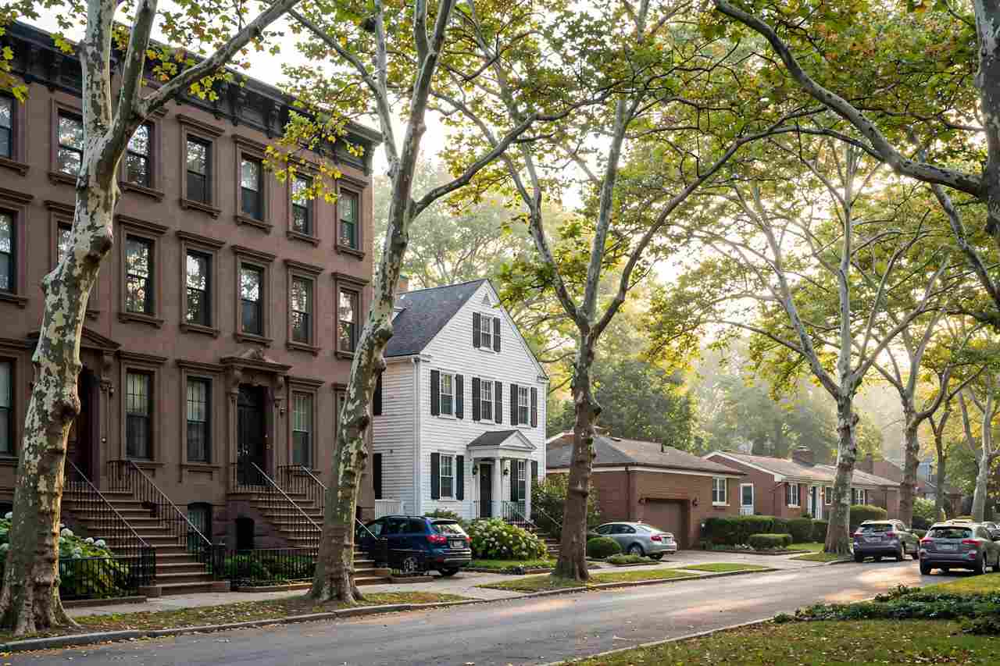

Rodent Control · Williston Park, NY
Same-Day Rodent Control in Williston Park, NY
Hearing scratching at night or finding droppings in Williston Park? Murvo is a rodent-only specialist offering same-day service from local crews. We identify the species, remove the infestation, clean up the mess, and exclude rodents for good. Pricing is flat-rate and quoted in writing, the work is guaranteed in writing, and coverage extends across Nassau County for homes and businesses alike. Local crews cover 1 ZIP codes in the Williston Park area, from Garden City Park to the far side of Nassau County.
24/7Availability
1ZIP codes covered
Same-dayResponse
Licensed · Upfront options · Written guarantees · Fully insured
Williston Park at a glance
Local Rodent Control for Williston Park, NY.
Nassau County
Countysoutheast New York
RegionQueens · 8 mi
Nearest metro131 mile south of Albany
From Albany1
ZIP codes covered Service by service in Williston Park
Rodent Control Services Available in Williston Park
The full range of residential and commercial rodent services in Williston Park and Nassau County - built around the species and housing here, from emergency removal and same-day control to exclusion, proofing, trapping, cleanup, and damage repair. Every service below is quoted flat-rate in writing and backed by our workmanship guarantee.
- 01Rodent Control↗
- 02Rodent Inspection↗
- 03Rodent Removal↗
- 04Rodent Exclusion↗
- 05Rodent Proofing↗
- 06Rat Control↗
- 07Mice Control↗
- 08Mouse Removal↗
- 09Rat Removal↗
- 10Rodent Trapping↗
- 11Rodent Baiting↗
- 12Rodenticide Application↗
- 13Attic Rodent Removal↗
- 14Crawl Space Rodent Removal↗
- 15Wall Rodent Removal↗
- 16Kitchen Rodent Control↗
- 17Garage Rodent Control↗
- 18Commercial Rodent Control↗
- 19Residential Rodent Control↗
- 20Emergency Rodent Removal↗
- 21Same-Day Rodent Control↗
- 22Rodent Damage Repair↗
- 23Rodent Waste Cleanup↗
- 24Rodent Disinfection↗
- 25Rodent Odor Removal↗
- 26Dead Rodent Removal↗
- 27Rodent Dropping Cleanup↗
- 28Rodent Exclusion for Roofs↗
- 29Rodent Exclusion for Vents↗
- 30Rodent Exclusion for Chimneys↗
Rodent Control in Williston Park
Rodent Control in Williston Park
In Williston Park, pre-war rowhomes, brownstones, walk-up apartment buildings, and older single-family homes give rodents warmth, shelter, and easy routes through basement foundations, sewer and pipe chases, shared party walls, and alley-facing garage and door seals, especially once nights turn cold across Nassau County. Our licensed, insured technicians identify the species, map active runways, and build a control plan around your home rather than a generic spray. Every visit is documented with photos, trap records, and clear next steps for your household.
Homeowners in Williston Park call Murvo for rodent control because the problem here is specific: Norway rat (Rattus norvegicus) pressure around pre-war rowhomes, brownstones, walk-up apartment buildings, and older single-family homes, tight access at basement foundations, sewer and pipe chases, shared party walls, and alley-facing garage and door seals, and activity that follows the local season. Our Nassau County crews diagnose the real source before recommending work, explain the options in plain language, and quote one flat rate in writing. Across Williston Park - including East Williston, Albertson - every visit is backed by licensed, insured technicians and our written workmanship guarantee. Coverage for rodent control spans 1 ZIP codes in Nassau County, including 11596.
We start by identifying whether Norway rat (Rattus norvegicus), House mouse (Mus musculus), or both are active, because each species nests, feeds, and travels differently. Traps are placed on proven runways along walls, beams, and pipe runs, checked on schedule, and adjusted as catches change. Once numbers fall, exclusion sealing closes the route back in, droppings and nesting debris are removed hygienically, and follow-up monitoring checks the attic, crawl space, and kitchen until readings stay clear. Nothing is sealed while animals remain inside. That order protects your home.
Booking takes one call, and same-day appointments are available in most Williston Park areas. Your technician inspects first, talks you through the plan in plain language, and only starts once you approve the written quote. Work is carried out in stages, with trap checks and sealing visits booked ahead. At the final visit we walk the finished work together and confirm monitoring is clear. Questions are answered at every stage, day or night.
Need help quickly in Williston Park? Call any time — the emergency line is staffed 24/7, and same-day rodent control appointments are available in most areas. We inspect first, explain the plan in plain language, and put the flat rate in writing before work starts. Around Williston Park, pre-war rowhomes, brownstones, walk-up apartment buildings, and older single-family homes give rodents the most cover, which is why entry points get checked before traps are set.
Murvo does not quote rodent control sight unseen, because species, activity, and sealing needs change the work involved. After inspection you get one flat-rate written quote, and that is the figure you pay. As national context only, Angi's 2026 figures put rat and mouse removal and control at an average of $396, with a typical range of $189 to $655 — a benchmark, not a Murvo price.
Rodent Inspection in Williston Park
Rodent Inspection in Williston Park
In pre-war rowhomes, brownstones, walk-up apartment buildings, and older single-family homes, the gap that matters is seldom the gap you can see. Rodents enter through basement foundations, sewer and pipe chases, shared party walls, and alley-facing garage and door seals and travel hidden routes, so a rodent inspection in Nassau County has to look behind, above, and below. Our technicians trace those routes systematically and explain, in plain language, which findings demand action now.
In Williston Park, rodent inspection is not a generic spray-and-go service. Rodents exploit basement foundations, sewer and pipe chases, shared party walls, and alley-facing garage and door seals in pre-war rowhomes, brownstones, walk-up apartment buildings, and older single-family homes, and a fix that ignores those routes does not last. Murvo's Williston Park team inspects first, shows you the evidence - droppings, gnaw marks, entry gaps - and then lays out the work with a flat-rate written quote. We serve all of Nassau County from Williston Park, including East Williston, Albertson, and every job is covered by our written workmanship guarantee. Coverage for rodent inspection spans 1 ZIP codes in Nassau County, including 11596.
Think of the inspection as three passes. The exterior pass checks siding, vents, pipe entries, and roof junctions for gaps and rub marks. The interior pass covers attic insulation, crawl-space corners, and kitchen voids for droppings, nests, and gnawing. The review pass brings it together: species, likely numbers, contamination, and the order in which fixes should happen. Each pass is photographed, and nothing is recommended without evidence from one of those passes to support it. The report separates what rodents are doing now from what the structure merely allows them to do later.
To book, call any time; urgent inspections are answered 24/7. We agree a window, note where you have noticed signs, and confirm access to the attic and crawl space. On the day, your technician works through the property methodically, reviews photographs with you on site, and leaves written findings plus any quote before departing. You keep the report either way, and it remains useful for staging repairs later or comparing conditions at a future seasonal check.
Inspections are the fastest way we help in Williston Park: same-day appointments are available in most areas, and urgent calls are answered 24/7. A typical rodent inspection takes under an hour for most homes, and you leave the visit with photos, written findings, and a flat-rate quote for any work we recommend, so decisions never wait on us. In Nassau County, activity follows the local season, so timing the work matters as much as the method.
Your exact rodent inspection price is confirmed before we visit, and any follow-up work is quoted as a flat rate in writing after the inspection — no hourly billing. For context, Angi's 2026 data puts a professional rodent inspection nationally at $100 to $200, often credited toward the job if you proceed.
Rodent Removal in Williston Park
Rodent Removal in Williston Park
Finding droppings in the kitchen or hearing scratching overhead in Williston Park means rodents are already living indoors, and they will not leave on their own. Murvo's rodent removal clears active Norway rat (Rattus norvegicus) and House mouse (Mus musculus) with targeted trapping, removes animals hygienically, and closes the entry points behind them. One flat-rate written quote covers the program before work begins.
In Williston Park, rodent removal is not a generic spray-and-go service. Rodents exploit basement foundations, sewer and pipe chases, shared party walls, and alley-facing garage and door seals in pre-war rowhomes, brownstones, walk-up apartment buildings, and older single-family homes, and a fix that ignores those routes does not last. Murvo's Williston Park team inspects first, shows you the evidence - droppings, gnaw marks, entry gaps - and then lays out the work with a flat-rate written quote. We serve all of Nassau County from Williston Park, including East Williston, Albertson, and every job is covered by our written workmanship guarantee. Homes near Garden City Park tend to show activity first in Williston Park, which is why inspections start with basement foundations, sewer and pipe chases, shared party walls, and alley-facing garage and door seals.
Removal here is measured in records, not impressions. Each trap is numbered, mapped, and checked on schedule, and every catch is logged against its location. That log shows where activity concentrates, where it is fading, and where a placement needs to move. When the log stays empty across repeat checks, removal is genuinely finished. Sealing recommendations follow immediately, because a clear home with open gaps will not stay clear for long in Williston Park. That record also protects you, because it shows exactly when activity ended rather than when visits simply stopped.
Same-day removal appointments are available across much of Williston Park for active infestations. After a quick inspection, your background-checked technician explains the trapping plan and gives you a flat-rate written quote; work starts only with your approval. Follow-up checks are booked before we leave, contaminated areas are made safe, and monitoring confirms the property is clear before we sign off. Every stage is explained in plain language as work proceeds. You keep copies of all visit records.
For active infestations in Williston Park, rodent removal can usually start the same day you call, and our team answers 24/7 when a rodent is loose in a living area. The first visit confirms activity and sets traps straight away; return visits then clear and reset them until monitoring shows the property is completely clear. A Williston Park inspection confirms it on site - dropping size, gnaw marks, and entry points tell the story quickly.
How many animals are active, which species they are, and how much sealing follows removal all shape the price, so we assess first and then quote one flat rate in writing. Angi's 2026 national context — an average of $396 and a typical $189 to $655 range for rat and mouse removal — is provided for comparison only; your written quote is the exact Murvo figure.
Rodent Exclusion in Williston Park
Rodent Exclusion in Williston Park
What makes sealing permanent rather than cosmetic? Material rodents cannot chew, fitted so weather cannot lift it. Murvo uses copper mesh, hardware cloth, and metal flashing where each belongs, installed by licensed and insured crews. Every finished seal is photographed, walked through with you, and covered by a written workmanship guarantee.
When you need rodent exclusion in Williston Park, the job starts with what is actually happening in your part of Nassau County. Murvo crews work Williston Park every week, so they know how Norway rat (Rattus norvegicus) and House mouse (Mus musculus) behave around pre-war rowhomes, brownstones, walk-up apartment buildings, and older single-family homes here - and where they get in: basement foundations, sewer and pipe chases, shared party walls, and alley-facing garage and door seals. We arrive equipped for the full job, confirm the flat rate in writing before work begins, and cover the whole Williston Park area, including East Williston, Albertson. No call-center runaround and no open-ended hourly billing - just a local crew, a clear plan, and a written quote you approve first. The Williston Park crews who handle rodent exclusion also handle the follow-through - proofing, cleanup, and monitoring - so one visit can close the whole problem.
Exclusion begins with a full exterior survey, paying particular attention to junctions where different materials meet, because those seams and transitions open up as a building ages and settles. Each opening is sealed with materials matched to it: copper mesh packed into gaps, hardware cloth over vents, metal flashing at roof junctions, and quality sealants for smaller cracks. Door sweeps are fitted, pipe gaps closed, and specialist roof, vent, and chimney sealing finished to weatherproof standards. Active animals are trapped out first.
Book the survey, and we will work around your schedule, including urgent openings near wiring or food storage. Approved work is completed opening by opening, photographed as it progresses, and reviewed with you before the visit ends. Your technician lists every gap found, explains which are active, and quotes the sealing as one written figure. The finished inventory lists every material used at every opening, which makes later inspections faster and keeps the guarantee easy to enforce.
Rodent exclusion in Williston Park usually starts with a survey visit we can often schedule the same day you call. Sealing itself is booked as soon as any active animals are cleared, because nothing is sealed inside. Most homes are fully sealed within days, not weeks, and urgent entry points near wiring or food areas are prioritized first. In Nassau County, activity follows the local season, so timing the work matters as much as the method.
For national context, Angi's 2026 data puts basic exclusion at $200 to $600, depending on access and the number of openings. That is a benchmark, not a Murvo price. After surveying your Williston Park home, we list every opening that needs sealing and quote one flat rate in writing, so you pay for the work your property actually needs and nothing more.
Rodent Proofing in Williston Park
Rodent Proofing in Williston Park
Most Williston Park proofing clients have not seen a rodent yet, and that is exactly the point. A rodent proofing survey finds the gaps, screens, and habits that would invite Norway rat (Rattus norvegicus) and House mouse (Mus musculus) in later, then fixes them in priority order under one flat-rate written quote you approve first.
Homeowners in Williston Park call Murvo for rodent proofing because the problem here is specific: Norway rat (Rattus norvegicus) pressure around pre-war rowhomes, brownstones, walk-up apartment buildings, and older single-family homes, tight access at basement foundations, sewer and pipe chases, shared party walls, and alley-facing garage and door seals, and activity that follows the local season. Our Nassau County crews diagnose the real source before recommending work, explain the options in plain language, and quote one flat rate in writing. Across Williston Park - including East Williston, Albertson - every visit is backed by licensed, insured technicians and our written workmanship guarantee. Seasonal timing matters for rodent proofing in Williston Park: rodents surge in Williston Park from October through March.
Materials follow the same standard as full exclusion work: copper mesh packed into irregular gaps, hardware cloth over openings that need airflow, flashing at vulnerable junctions, and sealants matched to smaller cracks. The written plan photographs each weakness, states who handles it, and schedules a seasonal re-check, since new gaps appear as a building ages and proofing works best as maintenance. Around kitchens, pipe runs and the voids behind units receive particular attention, because warmth and food meet there. Seasonal timing is noted in the plan as well.
Arrange a survey at a time that suits you; there is no emergency, so scheduling stays relaxed. Your technician walks every side of the property with you, photographs weak points, and talks through the plan in plain language. You then receive a written quote separating essential work from optional improvements, and nothing proceeds without your say-so. Staging the work is fine; essential sealing can proceed first while optional improvements wait until a season or budget that suits you better.
Rodent proofing is preventive, so there is rarely a rush, but surveys in Williston Park can often be arranged the same day you call, and always within a few days. Most proofing work is completed in a single visit once you approve the plan, and booking before colder weather gives your home protection ahead of the seasonal rush indoors. If you are seeing signs now, an inspection this week is the fastest way to know which situation you are in.
We survey your Williston Park property first, separate the quick wins you can handle yourself from the specialist sealing, and quote the professional work as one flat rate in writing so spending can be staged. Angi's 2026 national context puts exclusion, the core of proofing, at $200 to $600 for basic work — a benchmark only, not a Murvo price.
Rat Control in Williston Park
Rat Control in Williston Park
In pre-war rowhomes, brownstones, walk-up apartment buildings, and older single-family homes, rats exploit structure and routine together, traveling fences and pipes to reach food near basement foundations, sewer and pipe chases, shared party walls, and alley-facing garage and door seals. Our rat control across Nassau County checks attics, basements, drains, and outbuildings as one connected system, because treating a single room while harborage survives elsewhere simply moves the problem around the property.
In Williston Park, rat control is not a generic spray-and-go service. Rodents exploit basement foundations, sewer and pipe chases, shared party walls, and alley-facing garage and door seals in pre-war rowhomes, brownstones, walk-up apartment buildings, and older single-family homes, and a fix that ignores those routes does not last. Murvo's Williston Park team inspects first, shows you the evidence - droppings, gnaw marks, entry gaps - and then lays out the work with a flat-rate written quote. We serve all of Nassau County from Williston Park, including East Williston, Albertson, and every job is covered by our written workmanship guarantee. Coverage for rat control spans 1 ZIP codes in Nassau County, including 11596.
Control starts with species and route identification, because roof rats and Norway rats behave and enter very differently. Trapped rats are removed hygienically, and each visit is documented with locations and counts. We then pair the program with roofline and entry-point exclusion, plus attic removal and cleanup where nests are found overhead. Technicians pre-bait unset traps along proven runways so wary rats feed confidently, then set them and return to check, clear, and adjust placements until activity stops. Progress is visible at every visit.
After booking, we confirm access to attics, basements, and outbuildings so the first visit is productive. Follow-up visits are booked ahead, trapped rats are removed promptly, and a final monitoring check verifies the result before sign-off under our written workmanship guarantee. On arrival, your background-checked technician walks the property with you, sets out the plan, and starts pre-baiting straight away once you approve the quote. You see documented progress at each visit.
Call day or night — urgent rat control calls in Williston Park are answered 24/7, and a same-day inspection can usually start the program. Pre-baiting begins on that first visit once you approve the written quote, traps are set when rats are feeding confidently, and scheduled checks continue until activity stops. The written quote for your Williston Park property will spell out exactly which of these applies before any work starts.
Rat work varies with species, colony size, and how many entry points need sealing, so Murvo inspects first and quotes one flat rate in writing. For national context only, Angi's 2026 data averages rat control and removal at $396, typically $189 to $655. That benchmark is not a Murvo price; the written quote for your Williston Park home is the exact figure you pay.
Mice Control in Williston Park
Mice Control in Williston Park
In pre-war rowhomes, brownstones, walk-up apartment buildings, and older single-family homes, mice think small, and control has to think smaller. A gap at basement foundations, sewer and pipe chases, shared party walls, and alley-facing garage and door seals no wider than a pencil is an open door, and pipe runs become private highways across Nassau County homes. Our technicians hunt those overlooked routes for House mouse (Mus musculus) activity, then combine trapping, sealing, and food-storage advice.
Homeowners in Williston Park call Murvo for mice control because the problem here is specific: Norway rat (Rattus norvegicus) pressure around pre-war rowhomes, brownstones, walk-up apartment buildings, and older single-family homes, tight access at basement foundations, sewer and pipe chases, shared party walls, and alley-facing garage and door seals, and activity that follows the local season. Our Nassau County crews diagnose the real source before recommending work, explain the options in plain language, and quote one flat rate in writing. Across Williston Park - including East Williston, Albertson - every visit is backed by licensed, insured technicians and our written workmanship guarantee. Seasonal timing matters for mice control in Williston Park: rodents surge in Williston Park from October through March.
Our integrated approach favors trapping and sealing over baits, with genuinely pet-safe options for family homes. Droppings in cabinets are never dry-swept; following CDC guidance, surfaces are disinfected first so contamination is not spread into the air, and nesting debris is bagged and removed. Food-storage advice removes the attraction that drew mice in, and sealing is completed as whole-home proofing so kitchens, attics, and voids stay clear after the program ends. Catch records show exactly how numbers fall each visit.
During the program, store opened food in sealed containers and keep trap areas undisturbed. At the end you review the catch record together, receive prevention advice, and confirm the written guarantee before close. Your background-checked technician returns to clear and reset clusters, adjusts placements if the pattern shifts, and completes sealing once numbers fall. Prevention notes cover the exact storage and sealing issues found at your home, making them practical rather than generic advice.
Mice programs move quickly in Williston Park: a mice control survey can often be arranged the same day you call, and traps are set on that first visit once you approve the quote. Because mice investigate new objects fast, catches usually begin quickly, and scheduled check visits follow until a final confirmation shows activity has fully stopped. Around Williston Park, pre-war rowhomes, brownstones, walk-up apartment buildings, and older single-family homes give rodents the most cover, which is why entry points get checked before traps are set.
The number of rooms affected and the amount of sealing required set the price, so Murvo surveys first and quotes one flat rate in writing. For national context only, Angi's 2026 data averages rat and mouse control and removal at $396, typically $189 to $655 — not a Murvo price; your written quote is exact.
Mouse Removal in Williston Park
Mouse Removal in Williston Park
What does proper removal include beyond the traps themselves? Hygienic clearing of droppings and nesting, disinfection of affected cabinets, and sealing that stops the next mice using the same scent trails. Murvo delivers that complete finish with licensed, insured technicians and a written workmanship guarantee on the completed work.
In Williston Park, mouse removal is not a generic spray-and-go service. Rodents exploit basement foundations, sewer and pipe chases, shared party walls, and alley-facing garage and door seals in pre-war rowhomes, brownstones, walk-up apartment buildings, and older single-family homes, and a fix that ignores those routes does not last. Murvo's Williston Park team inspects first, shows you the evidence - droppings, gnaw marks, entry gaps - and then lays out the work with a flat-rate written quote. We serve all of Nassau County from Williston Park, including East Williston, Albertson, and every job is covered by our written workmanship guarantee. Around Garden City Park, Roslyn Heights, Manhasset Hills, the pattern is similar: House mouse (Mus musculus) finds basement foundations, sewer and pipe chases, shared party walls, and alley-facing garage and door seals first, and lasting mouse removal has to close those routes.
The survey comes first, and it is deliberately thorough. Returns are scheduled tightly: catches are cleared, traps reset, and numbers tracked until they fall to zero and stay there across a confirming check before sealing begins. Lofts, under-floor voids, cabinets, and the spaces behind kitchen units are checked for nests, droppings, and stored food caches. Traps are then set in multiples at proven points, because a single trap rarely reflects colony size. Photographs of nesting sites help here, because they reveal how far activity had spread before trapping began.
As catches fall, the focus shifts in order: final clearing, disinfection of affected areas, then sealing of access points. Your technician reviews the catch record with you at sign-off, confirms which rooms are fully safe to use, and leaves prevention advice plus guarantee paperwork. Seasonal proofing can be arranged if your property has repeated fall problems. If signs reappear during monitoring, placements are restored under the same agreed program rather than starting a new conversation from scratch.
For mice active in kitchens or living areas of your Williston Park home, mouse removal can often begin the same day you call. That first visit surveys nesting sites and sets traps as soon as you approve the quote, and because mice investigate traps quickly, catches usually start fast. Return visits continue until numbers reach zero. The written quote for your Williston Park property will spell out exactly which of these applies before any work starts.
Rooms involved and sealing needed determine the cost of removal, so we survey first and agree a flat rate in writing before work begins. As national context only, Angi's 2026 data averages rat and mouse removal at $396, with a typical range of $189 to $655; that benchmark is not a Murvo price, and your written quote covers your exact program.
Rat Removal in Williston Park
Rat Removal in Williston Park
If a rat is loose in a living area tonight, call; our lines stay open 24/7. Murvo pairs urgent response with a documented plan: hygienic removal across repeat visits, evidence from monitoring at the end, and a final walkthrough, so clearance is demonstrated to you rather than simply announced.
In Williston Park, rat removal is not a generic spray-and-go service. Rodents exploit basement foundations, sewer and pipe chases, shared party walls, and alley-facing garage and door seals in pre-war rowhomes, brownstones, walk-up apartment buildings, and older single-family homes, and a fix that ignores those routes does not last. Murvo's Williston Park team inspects first, shows you the evidence - droppings, gnaw marks, entry gaps - and then lays out the work with a flat-rate written quote. We serve all of Nassau County from Williston Park, including East Williston, Albertson, and every job is covered by our written workmanship guarantee. Around Garden City Park, Roslyn Heights, Manhasset Hills, the pattern is similar: House mouse (Mus musculus) finds basement foundations, sewer and pipe chases, shared party walls, and alley-facing garage and door seals first, and lasting rat removal has to close those routes.
We lead with trapping and exclusion in an integrated, pet-conscious approach, using locked bait stations only where genuinely justified and monitored on schedule. Monitoring devices and a final walkthrough then provide documented evidence that activity has ended, and ongoing proofing keeps drains, vents, and rooflines checked afterwards. After clearance, contaminated insulation areas can be sanitized, and droppings are never dry-swept: following CDC guidance, surfaces are disinfected first before waste is removed. That evidence is always shared with you in writing.
Book rat removal in Williston Park and we will agree a visit time, with same-day appointments available for active infestations. At the end, monitoring and a walkthrough confirm clearance, backed by our written workmanship guarantee. Your technician assesses species and colony size, explains the program, and confirms a flat-rate written quote before trapping starts. Repeat visits are scheduled ahead to remove animals and adjust traps. You see documented evidence of the result.
In Williston Park, rat removal can usually start the same day you call, with 24/7 answering for rats active in living areas. Pre-baiting begins on the first visit after you approve the written quote, and traps are set once rats feed confidently, typically within days. Repeat visits then run frequently until monitoring confirms the colony is gone. In Nassau County, most cases involve the Norway rat (Rattus norvegicus) and the House mouse (Mus musculus), so the inspection focuses on their routes first.
Colony size, access, and the sealing needed afterwards drive the price, so Murvo assesses the property first and quotes a flat rate in writing covering the full program. Angi's 2026 data, for national context only, averages rat removal at $396 and typically ranges from $189 to $655; that is a benchmark, not a Murvo price.
Rodent Trapping in Williston Park
Rodent Trapping in Williston Park
For Williston Park households who want a poison-free route, trapping delivers measurable results without chemicals in the home. Each catch is recorded by location, building a picture of movement through pre-war rowhomes, brownstones, walk-up apartment buildings, and older single-family homes via basement foundations, sewer and pipe chases, shared party walls, and alley-facing garage and door seals until numbers fall to zero. Murvo's licensed, insured technicians then recommend exclusion sealing and cleanup, and the whole program is backed by a written workmanship guarantee.
In Williston Park, rodent trapping is not a generic spray-and-go service. Rodents exploit basement foundations, sewer and pipe chases, shared party walls, and alley-facing garage and door seals in pre-war rowhomes, brownstones, walk-up apartment buildings, and older single-family homes, and a fix that ignores those routes does not last. Murvo's Williston Park team inspects first, shows you the evidence - droppings, gnaw marks, entry gaps - and then lays out the work with a flat-rate written quote. We serve all of Nassau County from Williston Park, including East Williston, Albertson, and every job is covered by our written workmanship guarantee. Coverage for rodent trapping spans 1 ZIP codes in Nassau County, including 11596.
A program opens with mapping, not trap placement. For rats, pre-baiting runs several days before traps are set, the step most amateur attempts skip. Every device is numbered, recorded, and revisited on a fixed schedule. Technicians read droppings, rub marks, and gnaw damage to reconstruct nightly routes through attics, basements, and kitchens. Devices are then selected for each location: snap traps for decisive results, multi-catch units on busy mouse routes, live-capture where release is preferred. The map also prevents a common mistake: removing a device that looks empty while its route is still active.
Book rodent trapping in Williston Park and a technician can often start the same day. The first visit inspects, maps activity, and places or pre-baits traps; you approve a flat-rate written quote covering the program including check visits before we proceed. Scheduled returns clear and reset traps and share catch records with you. When numbers reach zero, we confirm monitoring is clear and discuss sealing. The finished program is guaranteed in writing.
In Williston Park, a rodent trapping program can usually start the same day you call, with traps placed or pre-baiting begun on the first visit after you approve the quote. Mice often investigate within the first night, while wary rats need a few days of pre-baiting before traps are set. Scheduled checks then keep the program moving until numbers reach zero. Around Williston Park, pre-war rowhomes, brownstones, walk-up apartment buildings, and older single-family homes give rodents the most cover, which is why entry points get checked before traps are set.
Trapping is usually quoted as part of a complete removal program rather than by the trap, and the price depends on species, activity level, and how many check visits are needed. Murvo inspects first and quotes one flat rate in writing covering the program and its check visits, so there are no per-visit surprises and no hourly billing at any stage.
Rodent Baiting in Williston Park
Rodent Baiting in Williston Park
In pre-war rowhomes, brownstones, walk-up apartment buildings, and older single-family homes, bait has a narrow, specific job: reducing outdoor pressure while sealing removes the indoor route through basement foundations, sewer and pipe chases, shared party walls, and alley-facing garage and door seals. Our technicians in Nassau County place secured stations along runways away from play areas, label and photograph each one, and check consumption on schedule until activity ends and stations come out.
Homeowners in Williston Park call Murvo for rodent baiting because the problem here is specific: Norway rat (Rattus norvegicus) pressure around pre-war rowhomes, brownstones, walk-up apartment buildings, and older single-family homes, tight access at basement foundations, sewer and pipe chases, shared party walls, and alley-facing garage and door seals, and activity that follows the local season. Our Nassau County crews diagnose the real source before recommending work, explain the options in plain language, and quote one flat rate in writing. Across Williston Park - including East Williston, Albertson - every visit is backed by licensed, insured technicians and our written workmanship guarantee. In Williston Park, rodent baiting calls most often involve pre-war rowhomes, brownstones, walk-up apartment buildings, and older single-family homes, where basement foundations, sewer and pipe chases, shared party walls, and alley-facing garage and door seals decide whether the fix holds.
Placement discipline protects the household. Stations stay away from pet play areas, food storage, and anywhere children gather, and every location is agreed with you before installation. If a property cannot be baited safely, technicians say so and rely on trapping and proofing instead. Records from each visit show consumption trends honestly, including when activity has moved rather than fallen, so decisions about continuing, relocating, or removing stations rest on evidence you can inspect yourself. You receive copies of those records, so the reasoning behind every placement decision is open to inspection.
Booking rodent baiting in Williston Park starts with an inspection, not a station. Approved stations are installed locked and labeled the same visit, with locations photographed for you. Monitoring visits are scheduled before we leave, and stations come out once activity is confirmed clear. Your technician maps activity, reviews pet, child, and wildlife concerns with you, and confirms a flat-rate written quote before anything is placed. Your written guarantee covers the full program.
In Williston Park, rodent baiting starts with an inspection visit we can often arrange the same day you call. Stations are only placed after activity is mapped and you approve the written quote and each location, so setup is deliberate rather than rushed. Monitoring visits then run on a fixed schedule until consumption stops and activity is confirmed clear. That is also why Murvo pairs removal with exclusion in Williston Park - treating the animal without closing basement foundations, sewer and pipe chases, shared party walls, and alley-facing garage and door seals rarely lasts.
How many locked stations your property needs and how long monitoring runs determine the cost, so Murvo inspects and maps activity first, then quotes one flat rate in writing covering placement and scheduled checks. There are no per-visit surprises, and because the approach is exclusion-first, the aim is to reduce and eventually remove stations rather than maintain them forever.
Rodenticide Application in Williston Park
Rodenticide Application in Williston Park
What does the law in New York allow, and what will you be told? State rules restrict certain rodenticides, and Murvo complies with every applicable rule on every job. You receive label and safety information for any product used at your Williston Park property before application begins.
When you need rodenticide application in Williston Park, the job starts with what is actually happening in your part of Nassau County. Murvo crews work Williston Park every week, so they know how Norway rat (Rattus norvegicus) and House mouse (Mus musculus) behave around pre-war rowhomes, brownstones, walk-up apartment buildings, and older single-family homes here - and where they get in: basement foundations, sewer and pipe chases, shared party walls, and alley-facing garage and door seals. We arrive equipped for the full job, confirm the flat rate in writing before work begins, and cover the whole Williston Park area, including East Williston, Albertson. No call-center runaround and no open-ended hourly billing - just a local crew, a clear plan, and a written quote you approve first. Around Garden City Park, Roslyn Heights, Manhasset Hills, the pattern is similar: House mouse (Mus musculus) finds basement foundations, sewer and pipe chases, shared party walls, and alley-facing garage and door seals first, and lasting rodenticide application has to close those routes.
Documentation runs through the whole program. Stations are positioned away from areas children and pets use, checked against New York restrictions before selection, and removed once monitoring confirms activity has ended. Dead rodents are retrieved promptly where accessible. Meanwhile exclusion work proceeds in parallel, sealing entry points so dependence on chemical control shrinks with each visit rather than becoming permanent. Every product is recorded with its label and safety information, which stays with you. State rules are rechecked whenever a product changes, since permitted options can differ between jurisdictions and seasons.
Start with the inspection, often bookable the same day, and expect alternatives explained before products are discussed. Application happens only after approval, with monitoring visits scheduled and a clear stopping point agreed in advance. Your licensed technician confirms whether treatment is justified, reviews safety information with you, and provides the written quote. You can pause or stop the program at any point, and stopping triggers removal of stations rather than leaving them behind unattended.
In Williston Park, rodenticide application begins with an inspection we can often schedule the same day you call, because no responsible application happens without one. If treatment is justified and you approve the written quote, locked stations are installed on that visit. Monitoring then runs on schedule, and treatment stops as soon as data shows activity has ended. Around Williston Park, pre-war rowhomes, brownstones, walk-up apartment buildings, and older single-family homes give rodents the most cover, which is why entry points get checked before traps are set.
Application cost depends on the number of locked stations, the product required under New York rules, and how long monitoring runs. Murvo inspects first, explains whether trapping or exclusion could avoid chemical control entirely, and then quotes one flat rate in writing before work begins. The quote covers scheduled monitoring visits, so there are no per-visit surprises later.
Attic Rodent Removal in Williston Park
Attic Rodent Removal in Williston Park
Most Williston Park attic jobs start with nighttime scratching that grows bolder over a week. Murvo inspects the attic, roof, and eaves together, identifies whether Norway rat (Rattus norvegicus) or House mouse (Mus musculus) is overhead, traps up there, and seals the roofline afterwards. One flat-rate written quote is agreed before removal begins.
Homeowners in Williston Park call Murvo for attic rodent removal because the problem here is specific: Norway rat (Rattus norvegicus) pressure around pre-war rowhomes, brownstones, walk-up apartment buildings, and older single-family homes, tight access at basement foundations, sewer and pipe chases, shared party walls, and alley-facing garage and door seals, and activity that follows the local season. Our Nassau County crews diagnose the real source before recommending work, explain the options in plain language, and quote one flat rate in writing. Across Williston Park - including East Williston, Albertson - every visit is backed by licensed, insured technicians and our written workmanship guarantee. In Williston Park, attic rodent removal calls most often involve pre-war rowhomes, brownstones, walk-up apartment buildings, and older single-family homes, where basement foundations, sewer and pipe chases, shared party walls, and alley-facing garage and door seals decide whether the fix holds.
Attic work divides into clearing, closing, and confirming. Clearing means targeted traps set where droppings and runways concentrate, checked on schedule until catches end. Closing means roofline exclusion: metal mesh and sealed flashing at eaves, vents, and junctions, plus advice on branches bridging animals onto the roof. Confirming means monitoring traps left briefly after sealing, proving the space is empty. Photographs document conditions at each stage, including insulation damage and any wiring concerns found overhead. Before-and-after photographs make that sequence visible, including exactly which roofline openings were open at the start.
Before the visit, clear access to the attic hatch and note when noises are loudest. The job closes with a monitoring check, a walkthrough of photographs, and guarantee paperwork in your hands. On arrival, your background-checked technician explains the plan, starts trapping once the quote is approved, and reports insulation and wiring findings plainly. After sealing, a quiet attic is verified rather than assumed, and the monitoring result is reported to you before the job closes.
In Williston Park, attic rodent removal visits are often available the same day, and we prioritize attics where chewed wiring creates a fire risk. Trapping starts on the first visit after you approve the written quote, checks run on schedule, and most attics are cleared and sealed within days, with monitoring left briefly to confirm nothing remains inside. Murvo's Williston Park crews explain the finding either way, and the flat-rate quote leaves the decision with you.
Activity levels, roofline sealing, and whether contaminated insulation needs cleanup all affect attic pricing, so Murvo inspects first and quotes one flat rate in writing for the removal program. Cleanup options are priced separately in writing before you decide, so nothing is added once work is underway.
Crawl Space Rodent Removal in Williston Park
Crawl Space Rodent Removal in Williston Park
Most Williston Park crawl-space problems surface indirectly: a smell through the floorboards, a torn vapor barrier, droppings found during unrelated repairs. Murvo inspects beneath the home, traps active animals there, and seals vents and foundation gaps. One flat-rate written quote is agreed before trapping starts below.
When you need crawl space rodent removal in Williston Park, the job starts with what is actually happening in your part of Nassau County. Murvo crews work Williston Park every week, so they know how Norway rat (Rattus norvegicus) and House mouse (Mus musculus) behave around pre-war rowhomes, brownstones, walk-up apartment buildings, and older single-family homes here - and where they get in: basement foundations, sewer and pipe chases, shared party walls, and alley-facing garage and door seals. We arrive equipped for the full job, confirm the flat rate in writing before work begins, and cover the whole Williston Park area, including East Williston, Albertson. No call-center runaround and no open-ended hourly billing - just a local crew, a clear plan, and a written quote you approve first. Coverage for crawl space rodent removal spans 1 ZIP codes in Nassau County, including 11596.
The sequence is Inspect, Remove, Exclude, Clean, and Monitor. A full under-home inspection with photo documentation establishes species, nesting areas, and damage to vapor barrier and pipe insulation. Targeted trapping then removes active rats and mice below the house, with checks on schedule. After clearance, vent exclusion with sturdy mesh and sealing of pier and plumbing gaps close the space, and waste cleanup removes droppings and nesting material. Monitoring checks confirm activity has ended before we close the job properly.
Book crawl space rodent removal in Williston Park and we will schedule an under-home inspection, often within days and sooner for strong odors or heavy activity. Clearance, vent screening, and cleanup then follow in sequence. Monitoring confirms the space is quiet, and photographs of finished sealing accompany your guarantee. Your technician photographs conditions below, explains the plan, and confirms a flat-rate written quote before trapping starts. No extra vents are billed beyond the agreed scope.
For crawl space rodent removal in Williston Park, inspections are usually arranged within a few days — and sooner when odors are drifting into living areas or activity sounds heavy. Trapping begins on the first visit after you approve the written quote, clearance and sealing follow in sequence, and monitoring stays in place until the space below is confirmed quiet. That is also why Murvo pairs removal with exclusion in Williston Park - treating the animal without closing basement foundations, sewer and pipe chases, shared party walls, and alley-facing garage and door seals rarely lasts.
Crawl-space costs depend on access, how many vents and gaps need sealing, and whether waste cleanup is required, so Murvo inspects first and quotes one flat rate in writing. If extra vents need sealing within the agreed scope, there are no surprises, and cleanup options are priced in writing before you decide whether to include them.
Wall Rodent Removal in Williston Park
Wall Rodent Removal in Williston Park
We deliberately avoid poison for wall problems in Williston Park, because a poisoned rodent dying in a void creates exactly the odor problem homeowners fear. Trapping and exclusion are cleaner and safer around kids and pets. After removal, a quiet-wall check at different times of day confirms no second animal remains hidden in a connected void before we finish.
When you need wall rodent removal in Williston Park, the job starts with what is actually happening in your part of Nassau County. Murvo crews work Williston Park every week, so they know how Norway rat (Rattus norvegicus) and House mouse (Mus musculus) behave around pre-war rowhomes, brownstones, walk-up apartment buildings, and older single-family homes here - and where they get in: basement foundations, sewer and pipe chases, shared party walls, and alley-facing garage and door seals. We arrive equipped for the full job, confirm the flat rate in writing before work begins, and cover the whole Williston Park area, including East Williston, Albertson. No call-center runaround and no open-ended hourly billing - just a local crew, a clear plan, and a written quote you approve first. Seasonal timing matters for wall rodent removal in Williston Park: rodents surge in Williston Park from October through March.
Wall work follows Inspect, Remove, Exclude, Clean, and Monitor. Trapping is then placed at void access points to draw rodents out, and technicians return to clear traps and adjust positions if monitoring shows activity has moved to another void. We start by locating activity precisely, tracing entry routes from the roofline, baseboards, and pipe runs into the void, and using cameras where access allows. Only where an animal cannot be reached any other way do we agree a minimal, repairable access cut.
Book wall rodent removal in Williston Park and we will schedule a locating visit, often the same day for loud or persistent wall noise. Your technician traces the activity, explains exactly where the animal is traveling, and confirms a flat-rate written quote before any access work, so wall work never becomes an open-ended bill. Trapping and any agreed access follow, then sealing, sanitation, and monitoring complete the job. Your written guarantee covers the completed work.
In Williston Park, wall rodent removal locating visits are often available the same day you call, especially for persistent scratching keeping you awake. Trapping is set at access points on that first visit once you approve the written quote, and because rodents travel the void nightly, results usually follow within days, confirmed by quiet-wall checks before we sign off. A Williston Park inspection confirms it on site - dropping size, gnaw marks, and entry points tell the story quickly.
How precisely the activity can be located, and whether a minimal access cut turns out to be needed, decide the price of wall work. Murvo therefore locates the activity first and quotes a flat rate in writing, covering the trapping, sealing, and monitoring in your plan, so wall access never becomes an open-ended bill.
Kitchen Rodent Control in Williston Park
Kitchen Rodent Control in Williston Park
Grease smears at floor level tell a clear story. Rodents follow the same kitchen runways, squeezing past pipes and through basement foundations, sewer and pipe chases, shared party walls, and alley-facing garage and door seals to reach stored food. In Nassau County, Murvo pairs careful trapping with durable sealing and practical storage guidance, so your cooking space stays clean, usable and free of nightly visitors.
Homeowners in Williston Park call Murvo for kitchen rodent control because the problem here is specific: Norway rat (Rattus norvegicus) pressure around pre-war rowhomes, brownstones, walk-up apartment buildings, and older single-family homes, tight access at basement foundations, sewer and pipe chases, shared party walls, and alley-facing garage and door seals, and activity that follows the local season. Our Nassau County crews diagnose the real source before recommending work, explain the options in plain language, and quote one flat rate in writing. Across Williston Park - including East Williston, Albertson - every visit is backed by licensed, insured technicians and our written workmanship guarantee. Seasonal timing matters for kitchen rodent control in Williston Park: rodents surge in Williston Park from October through March.
Cupboard hinges, kick plates and pipe collars often reveal more than the room itself. Afterward, sealing closes the routes we documented, surfaces touched by droppings receive proper cleaning, and we walk through small habits that help: lids sealed, spills wiped from hidden edges, and pet food lifted overnight. We examine those details first, then work outward into adjoining voids and the basement or garage beyond. Removal stays targeted and discreet. Monitoring points stay in place until repeat visits show the kitchen has gone quiet.
It starts with a short call about sightings, sounds and access behind appliances. On arrival, your technician confirms the route rodents are using before quoting the full job in writing. Approved work removes the animals, closes entry gaps and addresses contaminated surfaces. We return as agreed to verify results, adjust if needed, and leave you with clear notes on what was sealed, what was cleaned, and what to watch for next.
You can reach us by phone 24/7, and reports of droppings close to food preparation surfaces are given priority when we schedule. A same-day visit in Williston Park may be possible in many cases, depending on technician availability. When you call, tell us what you found and we will offer the earliest appointment available. In Nassau County, most cases involve the Norway rat (Rattus norvegicus) and the House mouse (Mus musculus), so the inspection focuses on their routes first.
For national context, Angi's 2026 figures put rat extermination at $189-$655, averaging $396, but those figures are not Murvo prices. What your kitchen needs — trapping, sealing and follow-up monitoring — is assessed on site first. Murvo then provides one flat-rate written quote with no hourly billing, and work only begins after you approve it.
Garage Rodent Control in Williston Park
Garage Rodent Control in Williston Park
Boxes stacked against a wall make perfect cover. While the garage stays undisturbed, rodents chew, nest and breed out of sight in many pre-war rowhomes, brownstones, walk-up apartment buildings, and older single-family homes. Our team in Williston Park works through the clutter zones methodically, removes the animals, cleans affected spots, and shows you how raised, sealed storage removes the shelter they depend on.
When you need garage rodent control in Williston Park, the job starts with what is actually happening in your part of Nassau County. Murvo crews work Williston Park every week, so they know how Norway rat (Rattus norvegicus) and House mouse (Mus musculus) behave around pre-war rowhomes, brownstones, walk-up apartment buildings, and older single-family homes here - and where they get in: basement foundations, sewer and pipe chases, shared party walls, and alley-facing garage and door seals. We arrive equipped for the full job, confirm the flat rate in writing before work begins, and cover the whole Williston Park area, including East Williston, Albertson. No call-center runaround and no open-ended hourly billing - just a local crew, a clear plan, and a written quote you approve first. The Williston Park crews who handle garage rodent control also handle the follow-through - proofing, cleanup, and monitoring - so one visit can close the whole problem.
We start by reading the evidence: droppings along edges, shredded cardboard, grease marks and entry gaps at basement foundations, sewer and pipe chases, shared party walls, and alley-facing garage and door seals. Because garages feed activity into the rest of the home, adjoining rooms are checked too, so the problem is solved rather than displaced. Trapping is placed along walls and behind storage where rodents travel, checked and adjusted on follow-up visits. Next comes proofing: door seals, vents and utility penetrations sealed, damaged materials removed, and attractants such as open pet food addressed. Your technician explains each stage as the work progresses.
Share a few details when you book: what you found, where, and whether vehicles need moving. At the visit, the technician walks the garage with you, confirms entry points, and provides the full price in writing before starting. Trapping, nest clearing and sealing then proceed in order. Return visits check monitors and traps, and the job wraps up only when checks show no continuing activity around doors, walls or stored items inside the garage.
We answer calls 24/7 and treat garages with active nesting, chewed wiring or rodents moving into the house as urgent. Same-day appointments in Williston Park are often available, depending on technician schedules. Call with a description of the signs you have seen and we will offer you the earliest visit we can. In Nassau County, activity follows the local season, so timing the work matters as much as the method.
Pricing depends on garage size, how established the infestation is, and how much proofing the doors and walls need. Murvo inspects first and quotes one flat rate in writing, covering trapping, nest removal, sealing and monitoring, with no hourly charges. Nothing starts until you approve that price, and the completed work is backed by our written workmanship guarantee.
Commercial Rodent Control in Williston Park
Commercial Rodent Control in Williston Park
From kitchens and loading docks to bin areas and roof voids, commercial sites give Norway rat (Rattus norvegicus) and House mouse (Mus musculus) food, warmth and harbourage. Our commercial rodent control in Williston Park finds the pressure points, removes activity, seals entry routes and reports every visit in writing for your compliance file. Background-checked technicians carry out every visit.
When you need commercial rodent control in Williston Park, the job starts with what is actually happening in your part of Nassau County. Murvo crews work Williston Park every week, so they know how Norway rat (Rattus norvegicus) and House mouse (Mus musculus) behave around pre-war rowhomes, brownstones, walk-up apartment buildings, and older single-family homes here - and where they get in: basement foundations, sewer and pipe chases, shared party walls, and alley-facing garage and door seals. We arrive equipped for the full job, confirm the flat rate in writing before work begins, and cover the whole Williston Park area, including East Williston, Albertson. No call-center runaround and no open-ended hourly billing - just a local crew, a clear plan, and a written quote you approve first. The Williston Park crews who handle commercial rodent control also handle the follow-through - proofing, cleanup, and monitoring - so one visit can close the whole problem.
Programs follow Inspect, Remove, Exclude, Clean and Monitor. Service is scheduled around trading hours, and urgent sightings during trading are handled with particular discretion to protect your reputation with waiting customers. Technicians map activity with monitoring points, trap discreetly away from customers, and proof dock doors, vents and pipe penetrations against re-entry. Staff receive simple training pointers so your team spots early droppings or gnawing before a small issue becomes an audit failure. Each stage is recorded on your written service report.
Reach out and we will arrange a survey at a time that does not disrupt trading. The surveyor walks the whole site, notes risks by area, and sends a written proposal before any work starts. Once approved, initial removal and sealing begin discreetly, with a report after every visit for your compliance file. Scheduled checks continue from there, reviews track the trend, and urgent sightings can be reported by phone at any hour, day or night.
Commercial calls are taken 24/7, and a live sighting during trading is handled as an emergency with discretion to protect customers and reputation. The visit we can offer in Williston Park depends on technician availability, and we will always give you the earliest one possible. We can also advise on immediate steps to protect stock and your audit position while you wait. In Nassau County, activity follows the local season, so timing the work matters as much as the method.
For wider context, Angi's 2026 figures put rat extermination at $189-$655, averaging $396 nationally, though commercial sites are scoped individually and those figures are not Murvo prices. Site size, sector, activity and the exclusion and monitoring required all shape the cost. Murvo surveys first, then quotes a flat rate in writing for initial work or a clear scheduled-service price for an ongoing program, with reports included for your audit file.
Residential Rodent Control in Williston Park
Residential Rodent Control in Williston Park
Scratching above the ceiling rarely stays an attic-only problem. Rodents move through voids, drop into kitchens and nest where the house is warmest. Murvo's residential rodent control in Williston Park treats the whole property as one system, and you receive a flat-rate written quote after inspection, before removal, sealing or cleanup work begins.
Homeowners in Williston Park call Murvo for residential rodent control because the problem here is specific: Norway rat (Rattus norvegicus) pressure around pre-war rowhomes, brownstones, walk-up apartment buildings, and older single-family homes, tight access at basement foundations, sewer and pipe chases, shared party walls, and alley-facing garage and door seals, and activity that follows the local season. Our Nassau County crews diagnose the real source before recommending work, explain the options in plain language, and quote one flat rate in writing. Across Williston Park - including East Williston, Albertson - every visit is backed by licensed, insured technicians and our written workmanship guarantee. Around Garden City Park, Roslyn Heights, Manhasset Hills, the pattern is similar: House mouse (Mus musculus) finds basement foundations, sewer and pipe chases, shared party walls, and alley-facing garage and door seals first, and lasting residential rodent control has to close those routes.
Every home visit follows Inspect, Remove, Exclude, Clean and Monitor. Inspection covers attics, crawl spaces, garages, kitchens and the exterior, reading droppings, gnaw marks and rub marks to identify species and entry points such as basement foundations, sewer and pipe chases, shared party walls, and alley-facing garage and door seals. Removal uses targeted trapping placed safely away from children and pets. Exclusion seals the gaps found, cleanup disinfects contaminated areas, and monitoring visits confirm activity has ended rather than simply moved elsewhere in the house. Materials are chosen for durability, not the cheapest quick fix.
When you book, we note pets, children and access needs so the visit runs smoothly. Monitoring continues afterwards, with honest updates at every visit. We finish with prevention advice tailored to your home, and the guarantee covering the work is provided in writing. Your technician inspects, plans and quotes in writing before starting. Approved work removes the rodents, seals their entry points and cleans contaminated areas safely. The plan is agreed with you before any work begins.
You can call us 24/7, and homes where rodents are in living areas, kitchens or children's bedrooms are prioritized in scheduling. A same-day visit in Williston Park is often possible, subject to technician availability. Share what you have seen or heard and we will offer the earliest appointment available, plus advice for the meantime. The written quote for your Williston Park property will spell out exactly which of these applies before any work starts.
Cost depends on the species, how established the infestation is, and how much exclusion and cleanup your home needs. Murvo inspects first, then quotes one flat rate in writing covering removal, sealing, cleaning and monitoring, with no hourly charges or add-on surprises. You approve the price before work begins, and everything is backed by our written workmanship guarantee.
Emergency Rodent Removal in Williston Park
Emergency Rodent Removal in Williston Park
Emergencies feel worse at night, which is why Murvo answers around the clock. In Williston Park we prioritize live sightings, rodents in living areas and chewed wiring, then follow removal with sealing and disinfection. You receive a flat-rate written quote before work begins, even on urgent jobs.
In Williston Park, emergency rodent removal is not a generic spray-and-go service. Rodents exploit basement foundations, sewer and pipe chases, shared party walls, and alley-facing garage and door seals in pre-war rowhomes, brownstones, walk-up apartment buildings, and older single-family homes, and a fix that ignores those routes does not last. Murvo's Williston Park team inspects first, shows you the evidence - droppings, gnaw marks, entry gaps - and then lays out the work with a flat-rate written quote. We serve all of Nassau County from Williston Park, including East Williston, Albertson, and every job is covered by our written workmanship guarantee. Around Garden City Park, Roslyn Heights, Manhasset Hills, the pattern is similar: House mouse (Mus musculus) finds basement foundations, sewer and pipe chases, shared party walls, and alley-facing garage and door seals first, and lasting emergency rodent removal has to close those routes.
We triage every emergency call by risk: animals in living space, food contamination, electrical damage and vulnerable occupants come first. Contaminated areas are disinfected following safe practice, and a clear plan is agreed for any remaining trapping, sealing or cleanup work. On site, the technician isolates the affected area, removes the rodents, and inspects connected voids and entry points such as basement foundations, sewer and pipe chases, shared party walls, and alley-facing garage and door seals. Temporary securing is completed the same visit where full exclusion needs follow-up. Each stage is recorded on your written service report.
Call whenever the problem appears, day or night, and describe where the animal is and who is at home. Keep children and pets away from the area until we arrive. The technician assesses the scene, explains the plan, and confirms the price in writing before starting. Removal and securing follow, then cleaning and monitoring. Later checks confirm nothing else is active, and we review the outcome with you before closing the job as complete.
For emergencies, our line is open 24/7, every day, and calls from Williston Park are triaged by risk — live rodents in living areas, food contamination and chewed wiring come first. We will offer the earliest visit our technicians can reach. Until then, we will talk you through simple steps to keep people and pets safe. In Nassau County, most cases involve the Norway rat (Rattus norvegicus) and the House mouse (Mus musculus), so the inspection focuses on their routes first.
For national context, Angi's 2026 data puts rat extermination at $189-$655, averaging $396, though emergency work is not priced from those figures and they are not Murvo prices. Location, numbers involved and the securing, cleanup or follow-up needed set the scope. On arrival Murvo inspects and quotes one flat rate in writing, with no hourly billing even on urgent jobs, and nothing starts until you approve it.
Same-Day Rodent Control in Williston Park
Same-Day Rodent Control in Williston Park
You found the droppings today, so today is when you want answers. Murvo's same-day rodent control in Williston Park aims to inspect and begin work on the day you call, whenever scheduling allows. The visit includes a proper inspection and a flat-rate written quote before treatment starts, not a rushed guess over the phone.
In Williston Park, same-day rodent control is not a generic spray-and-go service. Rodents exploit basement foundations, sewer and pipe chases, shared party walls, and alley-facing garage and door seals in pre-war rowhomes, brownstones, walk-up apartment buildings, and older single-family homes, and a fix that ignores those routes does not last. Murvo's Williston Park team inspects first, shows you the evidence - droppings, gnaw marks, entry gaps - and then lays out the work with a flat-rate written quote. We serve all of Nassau County from Williston Park, including East Williston, Albertson, and every job is covered by our written workmanship guarantee. Seasonal timing matters for same-day rodent control in Williston Park: rodents surge in Williston Park from October through March.
Technicians combine immediate action with lasting proofing. The first visit removes pressure by setting traps and securing the most obvious gaps, while a full inspection maps every route rodents use around the building. Follow-up work completes exclusion, disinfects contaminated areas and verifies results through monitoring. This staged approach means same-day speed where it matters, without skipping the sealing and checking that make results permanent for Williston Park homes and businesses. Safety of occupants and pets guides every method chosen. Nothing is left to guesswork at any stage.
Call today and we will offer the earliest same-day appointment available in your area. All work is carried out by licensed, insured technicians and backed by our written workmanship guarantee. Your technician arrives in the agreed window, inspects the property and quotes one flat rate in writing. Once approved, trapping starts straight away and sealing is planned or completed. Monitoring visits follow until activity stops. We leave the area tidy when the work finishes.
Call as early in the day as you can and we will offer the earliest same-day appointment our Williston Park technicians can reach, subject to availability. Our lines are open 24/7. If today is fully booked, we will offer the next available visit and advise on simple precautions to take meanwhile. A Williston Park inspection confirms it on site - dropping size, gnaw marks, and entry points tell the story quickly.
Speed does not change how Murvo prices work, and there is no premium surprise for a same-day start. For context, Angi's 2026 figures put rat extermination at $189-$655, averaging $396 nationally, but those are not Murvo prices. After inspection, you receive one flat-rate written quote based on species, activity and the exclusion and cleanup needed, and treatment begins only after you approve it.
Rodent Damage Repair in Williston Park
Rodent Damage Repair in Williston Park
The rodents may be gone, but the chewed insulation and stained ceiling remain. Murvo's rodent damage repair in Williston Park puts the fabric of your home back together: contaminated material out, sound insulation in, gnawed openings repaired and proofed. A flat-rate written quote follows the assessment, so you approve the full scope before repairs start.
Homeowners in Williston Park call Murvo for rodent damage repair because the problem here is specific: Norway rat (Rattus norvegicus) pressure around pre-war rowhomes, brownstones, walk-up apartment buildings, and older single-family homes, tight access at basement foundations, sewer and pipe chases, shared party walls, and alley-facing garage and door seals, and activity that follows the local season. Our Nassau County crews diagnose the real source before recommending work, explain the options in plain language, and quote one flat rate in writing. Across Williston Park - including East Williston, Albertson - every visit is backed by licensed, insured technicians and our written workmanship guarantee. Seasonal timing matters for rodent damage repair in Williston Park: rodents surge in Williston Park from October through March.
Repair work follows the evidence from our inspection and your removal plan. Where rodents have damaged stored belongings, wiring looms or ducting, we explain options honestly before any cost is agreed. The finished repair is checked against the exclusion work, so repaired areas are also proofed areas, not fresh invitations for the next rodents. Technicians remove nesting and contaminated debris safely, disinfect affected surfaces, and repair the entry damage rodents caused, from pipe holes to door edges. The same careful standard applies on every single visit.
Tell us where the damage looks worst when you book, whether that is the attic, a ceiling stain or wiring you are worried about. With approval, contaminated material is removed safely, repairs and replacement insulation follow, and openings are proofed as part of the same work. The technician assesses each area, photographs the findings, and quotes the agreed repair scope in writing. We review every finished area with you and note any trade checks we still recommend afterwards.
Damage repair is scheduled once removal and exclusion are under way, so repairs are not undone by active rodents. We are available 24/7 by phone, and urgent safety issues in Williston Park, such as chewed wiring, are prioritized for assessment. Call and describe the damage, and we will arrange the earliest suitable visit. If you are seeing signs now, an inspection this week is the fastest way to know which situation you are in.
Repair costs depend on how much material is damaged, whether insulation needs replacing, and how many entry points require repair and proofing. Murvo assesses first and quotes one flat rate in writing for the agreed scope, with no hourly billing. You see exactly what is included before approving, and the completed repairs are backed by our written workmanship guarantee.
Rodent Waste Cleanup in Williston Park
Rodent Waste Cleanup in Williston Park
Droppings, urine-soaked insulation and nesting material are a health hazard, not just a mess. Our rodent waste cleanup in Williston Park removes rodent waste safely, following CDC guidance: ventilate first, soak everything with disinfectant, and never dry-sweep or vacuum droppings. Licensed technicians wear full PPE throughout. That is the standard Murvo works to in New York.
When you need rodent waste cleanup in Williston Park, the job starts with what is actually happening in your part of Nassau County. Murvo crews work Williston Park every week, so they know how Norway rat (Rattus norvegicus) and House mouse (Mus musculus) behave around pre-war rowhomes, brownstones, walk-up apartment buildings, and older single-family homes here - and where they get in: basement foundations, sewer and pipe chases, shared party walls, and alley-facing garage and door seals. We arrive equipped for the full job, confirm the flat rate in writing before work begins, and cover the whole Williston Park area, including East Williston, Albertson. No call-center runaround and no open-ended hourly billing - just a local crew, a clear plan, and a written quote you approve first. In Williston Park, rodent waste cleanup calls most often involve pre-war rowhomes, brownstones, walk-up apartment buildings, and older single-family homes, where basement foundations, sewer and pipe chases, shared party walls, and alley-facing garage and door seals decide whether the fix holds.
We begin by assessing the volume and location of contamination, from attic insulation to crawl space nesting. After ventilation, every deposit is sprayed with disinfectant and allowed to sit before anything is touched. Only then is material carefully removed by hand in full PPE, sealed in bags and taken away. Hard surfaces are washed and disinfected again. Where waste is mainly droppings in living areas, the same disinfect-first process applies, scaled to the rooms affected. Your technician explains each stage as the work progresses.
When you book, tell us where waste is worst, such as the attic or crawl space. Waste is soaked, removed in full PPE and disposed of sealed, then surfaces are disinfected again. We finish with reoccupation advice and a results check, all covered by the written workmanship guarantee. Your technician plans ventilation and access first, quotes in writing, and starts only with your approval. The plan is agreed with you before any work begins.
Calls are answered 24/7, and heavy contamination in living areas — especially where children or pets are present — is prioritized when we book. The earliest visit we can offer in Williston Park depends on technician schedules. In the meantime, keep people and pets out of the area, ventilate if you can do so safely, and never dry-sweep or vacuum droppings. Around Williston Park, pre-war rowhomes, brownstones, walk-up apartment buildings, and older single-family homes give rodents the most cover, which is why entry points get checked before traps are set.
Cleanup is priced by the volume and location of contaminated material, not by a national average. That said, Angi's 2026 figures put rat extermination typically at $189-$655, averaging $396, for national context only — they are not Murvo prices. Murvo assesses first, following CDC practice on ventilation and disinfectant soaking, then quotes one flat rate in writing so you approve the full cleanup cost before work begins.
Rodent Disinfection in Williston Park
Rodent Disinfection in Williston Park
Clean-looking is not the same as sanitized. Even after droppings are cleared, urine trails and bacteria can remain on beams, boards and stored items. Murvo's rodent disinfection in Williston Park treats those hidden traces where rodents lived and traveled, with a flat-rate written quote provided before any application work begins at your property.
Homeowners in Williston Park call Murvo for rodent disinfection because the problem here is specific: Norway rat (Rattus norvegicus) pressure around pre-war rowhomes, brownstones, walk-up apartment buildings, and older single-family homes, tight access at basement foundations, sewer and pipe chases, shared party walls, and alley-facing garage and door seals, and activity that follows the local season. Our Nassau County crews diagnose the real source before recommending work, explain the options in plain language, and quote one flat rate in writing. Across Williston Park - including East Williston, Albertson - every visit is backed by licensed, insured technicians and our written workmanship guarantee. In Williston Park, rodent disinfection calls most often involve pre-war rowhomes, brownstones, walk-up apartment buildings, and older single-family homes, where basement foundations, sewer and pipe chases, shared party walls, and alley-facing garage and door seals decide whether the fix holds.
We map contamination from the inspection evidence, including invisible urine trails along runways in attics, crawl spaces, wall voids, garages and kitchen voids. You are advised exactly when each treated area can be reoccupied safely. Surfaces are prepared, then treated with disinfectant selected with household safety in mind, with pet-safe options available. Treated scent trails are neutralised as part of the application, removing the pheromone signals that draw new rodents along old routes. Each stage is recorded on your written service report.
One call arranges treatment, usually alongside cleanup or removal follow-up. Application is carried out in PPE, with ventilation and dwell time observed. Afterwards we confirm reoccupation times clearly. If odor persists after sanitising, we can add targeted odor removal to the same plan, quoted in writing. On arrival we walk the affected areas with you, explain the products and safety steps, and confirm the written price. Nothing starts until you have approved the written quote.
Treatment is usually arranged promptly, straight after removal and cleanup, so contaminated areas are not left untreated. Our phone line is available 24/7, and appointments in Williston Park depend on technician availability. Call once rodents have been found or removed and we will book the earliest suitable visit and explain any precautions to take meanwhile. That is also why Murvo pairs removal with exclusion in Williston Park - treating the animal without closing basement foundations, sewer and pipe chases, shared party walls, and alley-facing garage and door seals rarely lasts.
For national context, Angi's 2026 data puts rat extermination typically at $189-$655, averaging $396; disinfection is normally a modest part of a full remediation program, not a Murvo price list. Murvo quotes disinfection as a flat rate in writing, scaled to the number and size of areas treated, never sold as a vague add-on. You approve the price before treatment begins.
Rodent Odor Removal in Williston Park
Rodent Odor Removal in Williston Park
That sharp, stale smell near one wall often has a specific cause: a nest, urine saturation or an animal that died out of sight. In Williston Park, we trace the pattern room by room, deal with the contamination using safe disinfection practice, and treat the materials affected, so the odor fades because its source is actually gone.
When you need rodent odor removal in Williston Park, the job starts with what is actually happening in your part of Nassau County. Murvo crews work Williston Park every week, so they know how Norway rat (Rattus norvegicus) and House mouse (Mus musculus) behave around pre-war rowhomes, brownstones, walk-up apartment buildings, and older single-family homes here - and where they get in: basement foundations, sewer and pipe chases, shared party walls, and alley-facing garage and door seals. We arrive equipped for the full job, confirm the flat rate in writing before work begins, and cover the whole Williston Park area, including East Williston, Albertson. No call-center runaround and no open-ended hourly billing - just a local crew, a clear plan, and a written quote you approve first. The Williston Park crews who handle rodent odor removal also handle the follow-through - proofing, cleanup, and monitoring - so one visit can close the whole problem.
We follow the smell, literally, checking where it strengthens and where it fades to narrow the search through attics, voids and crawl spaces. Once located, the source, whether urine-soaked insulation, nesting or a carcass, is handled under CDC cleanup practice: ventilate the area, soak contamination with disinfectant, never dry-sweep or vacuum deposits, and wear full PPE. Material comes out sealed. Surfaces are then disinfected and treated with neutralizing products aimed at the residue itself, rather than perfumes that simply sit on top of it temporarily.
After booking, your technician inspects the areas where smell is strongest and traces it to its source before quoting. Once approved, the source is removed safely, surfaces treated and the area ventilated. We check the result with you before finishing and advise if any material needs drying time. The work is backed by our written workmanship guarantee. You receive one flat-rate written quote covering removal, disinfection and odor treatment. We leave the area tidy when the work finishes.
Odor investigations are booked as inspection visits, and we will offer the earliest appointment our Williston Park technicians can reach. We answer calls 24/7. Strong smells from a suspected dead rodent in a wall are prioritized where possible. Meanwhile, ventilate affected rooms and avoid disturbing droppings or nesting you may find. That is also why Murvo pairs removal with exclusion in Williston Park - treating the animal without closing basement foundations, sewer and pipe chases, shared party walls, and alley-facing garage and door seals rarely lasts.
For national context, Angi's 2026 figures put rat extermination typically at $189-$655, averaging $396; odor work varies with the source and materials affected, and those figures are not Murvo prices. Murvo finds the source first, then quotes one flat rate in writing covering removal, disinfection and treatment. You approve the full price before work begins, under our written workmanship guarantee.
Dead Rodent Removal in Williston Park
Dead Rodent Removal in Williston Park
Guessing wrong is expensive here: a hole cut in the wrong place leaves the smell and adds a repair. Technicians in Williston Park read the odor gradient, check attic and crawl space access, and use fly activity as a clue before deciding where to open. Once found, the animal is removed in protective gear and the cavity treated.
Homeowners in Williston Park call Murvo for dead rodent removal because the problem here is specific: Norway rat (Rattus norvegicus) pressure around pre-war rowhomes, brownstones, walk-up apartment buildings, and older single-family homes, tight access at basement foundations, sewer and pipe chases, shared party walls, and alley-facing garage and door seals, and activity that follows the local season. Our Nassau County crews diagnose the real source before recommending work, explain the options in plain language, and quote one flat rate in writing. Across Williston Park - including East Williston, Albertson - every visit is backed by licensed, insured technicians and our written workmanship guarantee. The Williston Park crews who handle dead rodent removal also handle the follow-through - proofing, cleanup, and monitoring - so one visit can close the whole problem.
Sometimes the answer is simpler: an animal in attic insulation or under floorboards that can be reached without opening a wall at all. Removal includes contaminated material immediately around the carcass, removed after disinfectant treatment and disposed of sealed. Odor treatment follows disinfection at the exact location. We check those accessible places first. Finally, we trace the probable entry route, since an animal that died indoors entered somehow, and we record any further live activity we notice so a removal plan can follow if needed.
Call and describe where the smell is strongest and when it started. We check for entry points and further activity. The work is backed by our written workmanship guarantee. Your technician inspects on arrival, pinpoints the carcass, and quotes one flat rate in writing before removal. Once approved, the carcass is removed in PPE, the area disinfected and any access opening explained and made good as agreed. You stay informed at every stage of the work.
Dead rodent calls are treated as urgent because odor and fly activity worsen quickly, and our line is open 24/7. In Williston Park we will offer the earliest visit our technicians can reach. When you call, tell us where the smell is strongest and when it began, and avoid masking sprays meanwhile, as the natural odor pattern helps us locate the carcass. Around Williston Park, pre-war rowhomes, brownstones, walk-up apartment buildings, and older single-family homes give rodents the most cover, which is why entry points get checked before traps are set.
Access makes the biggest difference: an open attic is simpler than a sealed wall void. Published guides citing Fixr put dead rodent removal typically at $150-$250 nationally, depending on access, but that range is not a Murvo price. Murvo locates the carcass first, then quotes one flat rate in writing covering removal and disinfection, which you approve before any work begins.
Rodent Dropping Cleanup in Williston Park
Rodent Dropping Cleanup in Williston Park
Droppings are evidence as well as a hazard. Their size and shape distinguish mice from rats, and their locations map the travel routes rodents use. Murvo's rodent dropping cleanup in Williston Park cleans up in full PPE, disinfects surfaces, and feeds those findings into your removal and sealing plan.
In Williston Park, rodent dropping cleanup is not a generic spray-and-go service. Rodents exploit basement foundations, sewer and pipe chases, shared party walls, and alley-facing garage and door seals in pre-war rowhomes, brownstones, walk-up apartment buildings, and older single-family homes, and a fix that ignores those routes does not last. Murvo's Williston Park team inspects first, shows you the evidence - droppings, gnaw marks, entry gaps - and then lays out the work with a flat-rate written quote. We serve all of Nassau County from Williston Park, including East Williston, Albertson, and every job is covered by our written workmanship guarantee. Coverage for rodent dropping cleanup spans 1 ZIP codes in Nassau County, including 11596.
Every cleanup follows CDC safe practice. Only then is material removed by technicians wearing gloves and respirators, bagged and sealed. After removal, surfaces are washed and given a full disinfection treatment, because droppings are usually accompanied by urine trails invisible to the eye. Nothing is ever dry-swept or vacuumed while untreated, at any stage. The area is ventilated first, then every deposit is soaked with disinfectant and left for the full dwell time before anything is touched. Materials are chosen for durability, not the cheapest quick fix.
One call books a safe assessment. We close the job when surfaces are clean and sanitised and the wider rodent plan is in place. On arrival we inspect without disturbing dry deposits, explain the process and confirm the written price. Technicians then ventilate, soak, remove and disinfect, working room by room. Follow-up ties into monitoring, so any fresh droppings are spotted quickly and acted on. Questions are answered honestly throughout, with findings in writing.
Our line is answered 24/7, and we will offer the earliest Williston Park appointment our technicians can reach, prioritizing droppings found in kitchens and living areas. Until we arrive, keep children and pets away from deposits and ventilate the room if you can do so safely. Do not sweep, brush or vacuum anything dry, as that can disturb contaminated particles. The written quote for your Williston Park property will spell out exactly which of these applies before any work starts.
For national context, Angi's 2026 data puts rat extermination typically at $189-$655, averaging $396; dropping cleanup is normally a smaller, clearly itemised part of overall work, and those figures are not Murvo prices. Murvo assesses how many rooms are affected and how heavy deposits are, then quotes one flat rate in writing before cleanup begins.
Rodent Exclusion for Roofs in Williston Park
Rodent Exclusion for Roofs in Williston Park
Look up before you look in the attic. Gaps at the eaves, lifted flashing and vents without covers invite Norway rat (Rattus norvegicus) and House mouse (Mus musculus) straight into the roof space of Williston Park homes. Murvo's rodent exclusion for roofs seals those points with materials rodents cannot gnaw through, and a flat-rate written quote is provided after the roofline survey, before work begins.
When you need rodent exclusion for roofs in Williston Park, the job starts with what is actually happening in your part of Nassau County. Murvo crews work Williston Park every week, so they know how Norway rat (Rattus norvegicus) and House mouse (Mus musculus) behave around pre-war rowhomes, brownstones, walk-up apartment buildings, and older single-family homes here - and where they get in: basement foundations, sewer and pipe chases, shared party walls, and alley-facing garage and door seals. We arrive equipped for the full job, confirm the flat rate in writing before work begins, and cover the whole Williston Park area, including East Williston, Albertson. No call-center runaround and no open-ended hourly billing - just a local crew, a clear plan, and a written quote you approve first. Seasonal timing matters for rodent exclusion for roofs in Williston Park: rodents surge in Williston Park from October through March.
Filler alone fails on a roof, and we will not rely on it. Technicians work through the roofline methodically, treating vents, cable entries, tile junctions and gaps at basement foundations, sewer and pipe chases, shared party walls, and alley-facing garage and door seals one by one. Hardware cloth is cut and fixed firmly, copper mesh fills the awkward contours mesh sheet cannot cover, and sealants are used as a finishing layer, not the barrier itself. Damaged vent covers are replaced with sturdier versions. Monitoring inside the attic follows, confirming that the sealed roofline is holding and no activity remains trapped or active.
After booking, your technician inspects the attic and roofline safely and photographs every entry point found. Monitoring checks follow to confirm the attic stays clear. All sealing work is backed by our written workmanship guarantee. You receive one flat-rate written quote for the exclusion work before anything starts. Removal is completed or confirmed first, then sealing goes ahead with copper mesh, hardware cloth and sealants. You stay informed at every stage of the work.
Roof surveys are booked as inspection visits, and we will offer the earliest appointment our Williston Park technicians can reach, with our lines open 24/7. Active attic infestations are prioritized where possible. Meanwhile, note where noises occur and avoid blocking any roof gaps yourself, as rodents could be trapped inside. In Nassau County, activity follows the local season, so timing the work matters as much as the method.
Roofline work varies with access, roof size and any damage found, so it is surveyed before it is priced. For national context, published guides put basic exclusion typically at $200-$600, but that range is not a Murvo price. Murvo then quotes one flat rate in writing for the agreed scope — copper mesh, hardware cloth, metal flashing and sealants as each point requires — and you approve the price before work begins.
Rodent Exclusion for Vents in Williston Park
Rodent Exclusion for Vents in Williston Park
Dryer vents, attic vents, gable vents and crawl space vents all fail the same way: flimsy screens rodents push through or chew. In Williston Park Murvo replaces weak covers with hardware cloth and metal vent guards, seals the edges, and checks every vent on the property, not just the obvious one.
Homeowners in Williston Park call Murvo for rodent exclusion for vents because the problem here is specific: Norway rat (Rattus norvegicus) pressure around pre-war rowhomes, brownstones, walk-up apartment buildings, and older single-family homes, tight access at basement foundations, sewer and pipe chases, shared party walls, and alley-facing garage and door seals, and activity that follows the local season. Our Nassau County crews diagnose the real source before recommending work, explain the options in plain language, and quote one flat rate in writing. Across Williston Park - including East Williston, Albertson - every visit is backed by licensed, insured technicians and our written workmanship guarantee. Homes near Garden City Park tend to show activity first in Williston Park, which is why inspections start with basement foundations, sewer and pipe chases, shared party walls, and alley-facing garage and door seals.
Method matters more than speed here. Technicians measure each vent, shape hardware cloth to the opening, secure it with proper fixings, then use copper mesh for the gaps sheet mesh cannot reach and sealant to weatherproof the perimeter. Dryer ducting gets checked for lint buildup and damage while the cover is fitted, without restricting exhaust flow. A loose staple job lasts weeks; a framed, screwed fitting lasts. Every other entry point nearby is noted too, so vent proofing connects to the wider exclusion picture for your property.
One call arranges the inspection at a time that suits you. On arrival, the technician explains the order of work, inspects attic to foundation, and confirms the full price in writing before fitting begins. Approved work proceeds systematically, carried out by licensed, insured technicians. Each finished vent is checked for a secure fit and proper airflow. We finish with a clear summary of materials used at each vent and advice on spotting early damage, like lifted edges or fresh gnaw marks, in future.
Vent inspections are booked as standard visits, and we will offer the earliest appointment available in Williston Park, with phone lines open 24/7. If rodents are actively coming through a vent into living areas, tell us and we will prioritize where we can. Avoid taping vents shut meanwhile, as airflow and trapped animals become problems. That is also why Murvo pairs removal with exclusion in Williston Park - treating the animal without closing basement foundations, sewer and pipe chases, shared party walls, and alley-facing garage and door seals rarely lasts.
For national context, published guides put basic exclusion typically at $200-$600 nationally, depending on how many points need sealing; that is not a Murvo price. Vent work varies with vent numbers, sizes and access. Murvo inspects every vent first, then quotes one flat rate in writing for the agreed proofing. You approve the price before fitting begins, under our written guarantee.
Rodent Exclusion for Chimneys in Williston Park
Rodent Exclusion for Chimneys in Williston Park
From above, an open chimney looks like shelter: warm, dry and safe from predators. That is exactly how Norway rat (Rattus norvegicus) and House mouse (Mus musculus) treat it in Williston Park. Murvo's rodent exclusion for chimneys fits a properly measured cap with mesh sides, seals flashing gaps at the base, and confirms a flat-rate written quote before any fitting work begins.
Homeowners in Williston Park call Murvo for rodent exclusion for chimneys because the problem here is specific: Norway rat (Rattus norvegicus) pressure around pre-war rowhomes, brownstones, walk-up apartment buildings, and older single-family homes, tight access at basement foundations, sewer and pipe chases, shared party walls, and alley-facing garage and door seals, and activity that follows the local season. Our Nassau County crews diagnose the real source before recommending work, explain the options in plain language, and quote one flat rate in writing. Across Williston Park - including East Williston, Albertson - every visit is backed by licensed, insured technicians and our written workmanship guarantee. Homes near Garden City Park tend to show activity first in Williston Park, which is why inspections start with basement foundations, sewer and pipe chases, shared party walls, and alley-facing garage and door seals.
Fit and airflow decide whether chimney proofing works. A cap that restricts draw is dangerous, and one that sits loose invites both weather and animals. Technicians therefore test the draw on working fireplaces after fitting, check the cap fixing by hand, and seal the roof junction as part of the same job, since rodents refused at the flue will probe the flashing next. Nesting debris in accessible areas is cleared, and the firebox is checked for droppings or damage. All fittings are photographed and listed for your records at the end.
Tell us when you book whether the fireplace is used, and where noises or debris have shown up. Occupants are removed humanely first, debris is cleared, then the cap is fitted and flashing gaps sealed using copper mesh, hardware cloth and sealants where each fits best. Your technician surveys from firebox to crown, measures the flue, and quotes cap fitting plus sealing in writing before starting. We check the draw together on working fires and review photographs of the finished stack with you.
Chimney surveys are booked as inspection visits, and we will offer the earliest appointment our Williston Park technicians can reach, with lines open 24/7. If an animal is trapped or has fallen into the firebox, tell us when you call and we will prioritize where possible. Keep the damper closed and pets away meanwhile. That is also why Murvo pairs removal with exclusion in Williston Park - treating the animal without closing basement foundations, sewer and pipe chases, shared party walls, and alley-facing garage and door seals rarely lasts.
Chimney pricing varies with flue size, access and the condition of the crown. Published guides put basic exclusion typically at $200-$600 nationally, for context, but that range is not a Murvo price. Murvo surveys first, then quotes one flat rate in writing covering the properly sized meshed cap, its fitting and flashing sealed with metal flashing and sealants where needed, for your approval before work begins.
Transparent Pricing
Rodent Control pricing in Williston Park
Homeowners comparing prices in Williston Park will see wide ranges, because scope varies more than headlines suggest. Murvo's approach is simple: inspect the property, then quote a single flat rate in writing, with no hourly billing. For context, national Angi 2026 data, based on 9,458 projects, averages $396 for a rat exterminator, typically $189 to $655, while inspections commonly run $100 to $200 and basic exclusion $200 to $600. Those figures are a benchmark only, not Murvo's prices.
| Service | Typical Range |
|---|---|
| Rodent Control | $189-$655 |
| Rodent Inspection | $100-$200 |
| Rodent Removal | $189-$655 |
| Rodent Exclusion | $200-$600 |
| Rodent Proofing | $200-$600 |
| Rat Control | $189-$655 |
| Mice Control | $189-$655 |
| Mouse Removal | $189-$655 |
| Rat Removal | $189-$655 |
| Rodent Trapping | $189-$655 |
| Rodent Baiting | $189-$655 |
| Rodenticide Application | $189-$655 |
| Attic Rodent Removal | $189-$655 |
| Crawl Space Rodent Removal | $189-$655 |
| Wall Rodent Removal | $189-$655 |
| Kitchen Rodent Control | $189-$655 |
| Garage Rodent Control | $189-$655 |
| Commercial Rodent Control | $189-$655 |
| Residential Rodent Control | $189-$655 |
| Emergency Rodent Removal | $189-$655 |
| Same-Day Rodent Control | $189-$655 |
| Rodent Damage Repair | $189-$655 |
| Rodent Waste Cleanup | $189-$655 |
| Rodent Disinfection | $189-$655 |
| Rodent Odor Removal | $189-$655 |
| Dead Rodent Removal | $150-$250 |
| Rodent Dropping Cleanup | $189-$655 |
| Rodent Exclusion for Roofs | $200-$600 |
| Rodent Exclusion for Vents | $200-$600 |
| Rodent Exclusion for Chimneys | $200-$600 |
The final price for a Williston Park job reflects the work your property actually needs. Heavy infestations, multiple species, and long-established nesting cost more to clear than an early problem caught quickly. Entry-point count in pre-war rowhomes, brownstones, walk-up apartment buildings, and older single-family homes, how safely crews can reach the attic or crawl space, and how much cleanup and disinfection is required all change the scope. Rodents surge in Williston Park from October through March, sharpest from November to January, when the first freeze pushes rats and mice into heated basements and wall voids. Demand stays high all winter in older housing. Local demand may influence availability. Rather than estimate blindly, Murvo inspects, explains each factor, and quotes one flat rate in writing.
Our standard
Why Williston Park Residents Trust Us
Local accountability across Nassau County.
Code-Compliant
Work is planned to current building and safety codes, with sealing, screening, and repairs that protect the structure as well as stop rodents.
Same-Day Service
Same-day service is available for active infestations, with local crews dispatched for inspection, removal, and urgent securing of obvious entry points.
Upfront Pricing
Your quote is flat-rate and itemized in writing, covering the agreed inspection, removal, exclusion, and cleanup scope at the price you approved.
Licensed & Insured
Licensed, insured, and background-checked: every New York job is handled by vetted Murvo technicians, never day labor or unmarked subcontractors.
Williston Park problem patterns
Common Rodent Control Problems in Williston Park
The issues we fix most for Williston Park homeowners, and why they happen here.
Basement and sewer Norway rats
Why it happens Norway rats follow sewer lines and broken drains into basements in Williston Park, then burrow along foundations where soil meets old masonry. Food waste, alleys, and shared drains in Nassau County let one building's problem spread to the next.
Our approach Murvo starts with a basement and drain inspection, then traps the active rats and seals foundation and pipe entry points. Monitoring continues until activity stops, with exclusion covered by our guarantee.
House mice in shared walls
Why it happens House mice move through pipe chases and party walls in rowhomes and multi-unit buildings in Williston Park, so treating one unit alone rarely ends it. They can enter through a hole about the size of a dime and breed indoors all winter.
Our approach Murvo inspects adjoining voids and common areas, traps where mice actually travel, and seals gaps around pipes, wires, and door sweeps. Flat-rate pricing is set after inspection, with no surprise add-ons.
Winter attic and wall-void activity
Why it happens When temperatures drop in Nassau County, mice and squirrels use attics for warmth and Norway rats shelter in wall voids near heat sources. Scratching at night usually points to rats or mice, while daytime noise more often points to squirrels.
Our approach Murvo identifies the species from droppings, entry size, and noise timing before any removal begins. We then remove the animals, seal roofline and foundation gaps, and clean contaminated areas where needed.
Rodent droppings and odors in kitchens and garages
Why it happens Williston Park's year-round precipitation keeps food sources and moisture available, attracting rodents into kitchens and garages. Nassau County homes with attached garages see this most.
Our approach We provide rodent waste cleanup, rodent disinfection, rodent odor removal, and kitchen rodent control to make the space safe and sanitary again.
Early warning signsHave us take a look →
Signs You Need a Rodent Control Pro in Williston Park
01Chewed or frayed electrical wires in attics and garages
02Shredded paper, fabric, or insulation gathered into hidden nests
03Noises at night suggest rats or mice; daytime suggests squirrels
04Rice-sized droppings suggest mice; larger pellets suggest rats
05Pets staring, pawing, or barking at walls and appliances
We know the route
Serving Every Corner of Williston Park
We route efficiently across Nassau County, reaching every neighborhood from the southeast New York outskirts to the center of Williston Park.
Downtown Williston Park
Downtown and central Williston Park properties, with inspection, removal, and exclusion routed through the urban core and nearby mixed-use streets.
The Mineola corridor
Established Williston Park neighborhoods, where older homes, mature trees, and shared walls call for careful entry-point sealing and attic checks.
Greater Nassau County
Wider Nassau County coverage for suburban homes and businesses, including garages, crawl spaces, outbuildings, and properties at the county edge.
WILLISTON PARK
AREA
MMMMMAREA
Primary Williston Park response zone
Williston Park service coverage
Williston Park Neighborhoods & Areas We Serve
Our service area includes Williston Park plus surrounding Nassau County neighborhoods and towns. Homeowners and property managers get rodent-only specialists, licensed and insured, with pricing quoted flat-rate in writing and a written guarantee on the work performed.
11596
Popular neighborhoods
Check my address →
East Williston · Albertson · Mineola · Herricks · Searingtown · Garden City Park · Roslyn Heights · Manhasset Hills
Reviews
What Williston Park Customers Say
4.9★★★★★customer reviews
★★★★★
“The team knew Williston Park homes and got our rodent trapping done the first time. No repeat visits, no guesswork - they could pinpoint where the rodents were coming from. You can tell they've done this a thousand times.”
OJ
Omar J.Williston Park
Review★★★★★
“After rodenticide application was finished, the peace of mind was worth every dollar. They disinfected everything, closed the entry points, and checked back a week later. Our home finally feels safe thanks to Murvo Rodent Control in Williston Park.”
RB
Rachel B.Williston Park
Review★★★★★
“Called at 7 a.m. about same-day rodent control after hearing scratching in the walls. The crew arrived within the hour, found the entry point, and finished the rodent removal that afternoon. Couldn't be happier with how quickly they turned it around in Williston Park.”
JR
James R.Williston Park
Review Williston Park through the year
Seasonal Rodent Control Tips for Williston Park
The humid continental climate pattern in Nassau County drives when rodents move, breed, and break in. A season-by-season guide for Williston Park homes.
Spring
Melting snow and spring rain in Williston Park expose burrows and foundation cracks that were hidden all winter. Rats displaced from flooded burrows and drains look for dry ground-floor shelter. In Williston Park, the earliest signs usually show around Garden City Park and similar pre-war rowhomes, brownstones, walk-up apartment buildings, and older single-family homes.
Tip Walk the foundation after snowmelt and seal cracks and drain gaps before rats re-establish burrows.
Summer
Summer keeps Norway rats mostly outdoors in Williston Park, feeding around alleys, dumpsters, gardens, and restaurant waste. House mice stay indoors where food and water are steady, even when outdoor activity looks quiet. In Williston Park, the earliest signs usually show around Garden City Park and similar pre-war rowhomes, brownstones, walk-up apartment buildings, and older single-family homes.
Tip Keep alley and yard waste sealed in summer, because outdoor feeding now builds the population that moves in during fall.
Fall
Leaf litter, firewood, and stored garden items give rodents cover right against houses in Williston Park in fall. Rats also follow warming pipes and drains as sewer activity shifts with colder water. In the 11596 ZIP codes, seasonal checks focus on basement foundations, sewer and pipe chases, shared party walls, and alley-facing garage and door seals.
Tip Move firewood away from the house and clear litter along the foundation in fall so entry points stay visible.
Winter
Snow cover in Williston Park hides vole runways in lawns and lets mice travel under cover to foundation gaps. Freeze-thaw cycles also open mortar joints and gaps around utility lines. Homes around Garden City Park, Roslyn Heights, Manhasset Hills tend to report activity first in Williston Park.
Tip Check for tracks and droppings along the foundation after snow, and re-check seals after freeze-thaw weather.
Learn more
Rodent Safety & Prevention Resources for Williston Park, NY
Murvo follows integrated pest management and safe-cleanup guidance from federal health and environmental authorities. These resources explain rodent-borne disease prevention, safe droppings cleanup, and the exclusion methods that keep rodents out for good:
FAQs
Williston Park Rodent Control FAQs
A real dispatcher is available if your question is not answered here.
Call (888) 842-2618 →Yes. Murvo runs 24/7 emergency rodent control in Williston Park, with same-day appointments kept open for urgent problems - a rat in the kitchen, scratching in the walls at night, or a dead rodent odor. Call (888) 842-2618 any time and a real dispatcher will route the nearest Nassau County crew. Emergency work is quoted flat-rate in writing before we begin, just like scheduled work.
It depends on species, infestation size, how many entry points need sealing, and whether cleanup is required. For national context, Angi's 2026 data puts a rat exterminator at $396 on average, typically $189 to $655. That is national data, not a Murvo price. Murvo inspects your Williston Park property first, then quotes one flat rate in writing before any work begins, so the price you approve is the price you pay. In Nassau County, most cases involve the Norway rat (Rattus norvegicus) and the House mouse (Mus musculus), so the inspection focuses on their routes first.
Yes. Murvo Rodent Control is licensed and insured in New York, every technician is background-checked, and every Williston Park job is backed by a written workmanship guarantee. New York requires DEC commercial pesticide certification and business registration, and New York City has dedicated rat-mitigation rules and rat-mitigation zones. If rodents return through an entry point we sealed, we come back under the guarantee terms - that is the difference between a treatment and a fix.
We serve Williston Park and communities across Nassau County, including East Williston, Albertson, Mineola, Herricks, Searingtown, Garden City Park. Crews cover 1 ZIP codes in the Williston Park area, and because the teams are local, routing is based on where you actually live - not a statewide dispatch queue. If you are just outside the listed areas, call (888) 842-2618 and we will confirm coverage for your address.
An inspection and initial removal visit usually happen on the first appointment, but clearing an established infestation is a process, not a single moment. Trapping and monitoring continue until activity stops, and exclusion is completed once entry points are confirmed. Timelines in Williston Park vary with species, access, and infestation size. Murvo sets expectations in writing at the quote stage and keeps monitoring until checks show the property is clear and sealed. Around Williston Park, pre-war rowhomes, brownstones, walk-up apartment buildings, and older single-family homes give rodents the most cover, which is why entry points get checked before traps are set.
Almost never. As long as food, water, and shelter remain available, rats and mice stay, breed, and expand into new voids and storage areas. DIY trapping may catch a few animals while the population replaces them through the same entry points. Lasting control in Williston Park requires removing the active animals, sealing how they got in, and cleaning scent trails and nesting. That combination, not waiting, is what ends the cycle. That is also why Murvo pairs removal with exclusion in Williston Park - treating the animal without closing basement foundations, sewer and pipe chases, shared party walls, and alley-facing garage and door seals rarely lasts.
Usually, yes. House mice are social, secretive, and quick to nest close to food, so one visible mouse often means others are traveling the same routes at night. Look for rice-sized droppings, gnaw marks, and nesting material along walls and behind appliances. A Murvo inspection in Williston Park checks those signs, estimates activity, and finds entry points before recommending treatment, so you know whether you are dealing with a single visitor or an established group. That is also why Murvo pairs removal with exclusion in Williston Park - treating the animal without closing basement foundations, sewer and pipe chases, shared party walls, and alley-facing garage and door seals rarely lasts.
Yes - every Williston Park job comes with a written workmanship guarantee. If rodents get back in through an entry point Murvo sealed, we return and re-seal it under the guarantee terms. The guarantee is stated in writing on your quote before work begins, along with the flat rate, so there are no surprises about what is covered or what it costs.

Williston Park dispatch is ready
Need Rodent Control in Williston Park Today?
Do not let scratching, droppings, or gnawed wiring wait another night in Williston Park. Call Murvo at (888) 842-2618 for same-day rodent control, a flat-rate quote in writing, and guaranteed exclusion from local licensed crews.